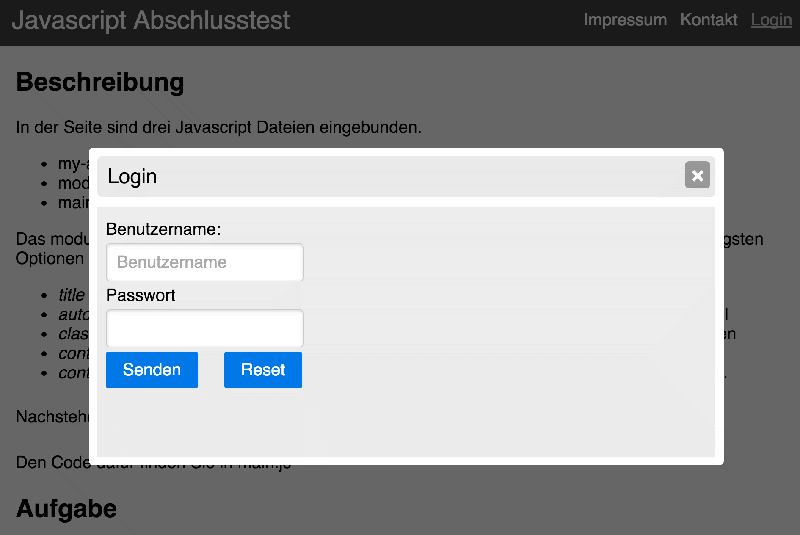

Beschreibung
In der Seite sind drei Javascript Dateien eingebunden.
- my-ajax.js
- modal-win.js
- main.js
Das Modul ModalWin erzeugt durch eine Konstruktorfunktion einen modalen Dialog (siehe main.js). Die wichtigsten Optionen werden einem Parameter als Object beim Erstellen mitgegeben:
- contentURL - eine URL über die der Inhalt des modalen Fensters per AJAX geladen wird.
- contentLoaded - eine callback Funktion, die aufgerufen wird, sobald der Inhalt per AJAX erfolgreich geladen wurde. Hier können zB DOM Manipulationen am geladenen Inhalt vorgenommen werden.
- beforeClose - eine callback Funktion, die aufgerufen wird, wenn das Dialogfenster geschlossen werden soll (Klick auf das Kreuz in der Titelzeile). Diese muss true oder false zurückgeben. Gibt sie true zurück, wird das Dialogfenster geschlossen, gibt sie false zurück, bleibt es geöffnet.
Nachstehender Link öffnet einen Beispiel-Dialog:
Den Code dafür finden Sie in main.js
Aufgaben
- In der Datei “main.js” befinden sich vier Fehler, die das Öffnen des Beispieldialogs verhindern. Finden Sie diese und ermöglichen Sie das erfolgreiche Öffenen des Dialogs per Klick auf das Element mit der ID "exampleDialog"
- Per Klick auf den Link “Login” im Header der Datei soll ein Dialogfenster geöffnet werden, das die Datei “login.html” lädt. Nutzen Sie dazu das eingebundene “ModalWin” Objekt.
- Nach dem erfolgreichen Laden von “login.html” erstellen Sie rechts neben dem Submit input einen Reset input mit den Klassen “pure-button” “pure-button-primary”. Dieser soll nach links einen Außenabstand von 20px erhalten.
- Nutzen Sie die “beforeClose” Option des Dialogs (siehe obige Angaben!), um die User das Schließen per Javascript Popup bestätigen zu lassen: “Login wirklich schließen?”. Wenn die User OK klicken, wird der Dialog geschlossen, ansonsten bleibt er geöffnet.

Das geöffnete Dialogfenster